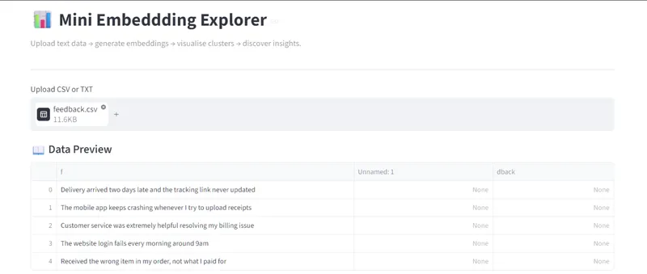
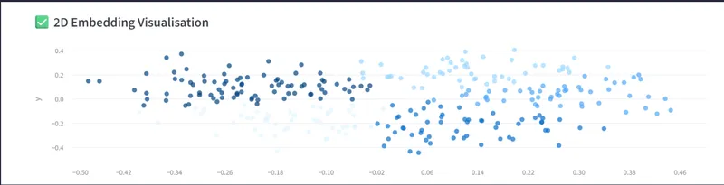
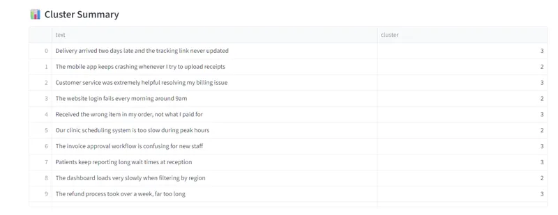

Mini Embedding Explorer


A lightweight, business‑ready analytics tool that transforms raw text into visual insights.
Upload customer feedback, support tickets, policies, CVs, or any text dataset — the app generates embeddings, reduces them to 2D, clusters them, and reveals hidden patterns.
Perfect for SMEs, councils, charities, and teams that need fast, AI‑powered text understanding without complex infrastructure.
📸 Screenshots
- Dashboard and CSV preview

- Scatter graph of embeddings

- Cluster summary of the CSV data

🚀 Features
- Upload CSV or TXT files
- Choose an embedding model (MiniLM by default)
- Automatic dimensionality reduction (PCA or UMAP)
- KMeans clustering with adjustable cluster count
- Interactive 2D scatter plot
- Hover to view original text
- Download clustered results as CSV
- Zero configuration — runs locally or on Streamlit Cloud
🧠 Real‑World Use Cases
This tool is intentionally small but delivers real business value:
- Customer Feedback Clustering — identify themes in reviews and surveys
- Support Ticket Triage — group recurring issues and detect outliers
- Document Similarity — map policies, reports, and internal knowledge
- Fraud Pattern Discovery — spot repeated scam wording or anomalies
- HR & Recruitment Insights — compare CVs and job descriptions
- SEO Topic Mapping — visualise content clusters and gaps
📦 Installation
pip install -r requirements.txt
▶️ Run the App
streamlit run app.py
📁 Project Structure
mini-embedding-explorer/
│
├── app.py # Streamlit UI
├── screenshots/
├── embeddings.py # Embedding + clustering engine
├── requirements.txt # Dependencies
├── README.md # Project documentation
└── examples/
└── feedback.csv
🧩 How It Works
Embeddings
Text is converted into numerical vectors using a SentenceTransformer model.Dimensionality Reduction
High‑dimensional vectors are compressed into 2D using PCA or UMAP.Clustering
KMeans groups similar texts together.Visualisation
The 2D points are plotted so humans can see patterns instantly.
📊 Example Workflow
Upload a CSV of customer comments
Select the text column
Choose PCA or UMAP
Pick number of clusters
Generate embeddings
Explore clusters visually
Download results
📝 Example Use Case: Customer Feedback
A business uploads:
feedback.csv - "Delivery was late again" - "Website login keeps failing" - "Customer service was excellent" - "Refund process is confusing"
The tool reveals clusters like:
Delivery issues
Website bugs
Positive service comments
Refund complaints
This helps teams prioritise improvements.
🛣️ Future Roadmap
Advanced Embedding Models — Add support for larger or domain‑specific models (legal, financial, medical) to improve clustering accuracy for specialised industries.
Semantic Search Engine — Allow users to search their dataset using natural language queries powered by embeddings, turning the tool into a mini knowledge explorer.
Topic Labeling — Automatically assign human‑readable labels to clusters (e.g., “Delivery Issues”, “Refund Complaints”), making insights easier for non‑technical teams.
Interactive Cluster Editing — Let users merge, rename, or split clusters directly in the UI, enabling custom business workflows and cleaner reporting.
- Built by Roy Peters 😁